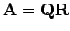
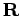
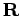

Inhalt Index DeskTop Bronstein

 Lineare Algebra Lineare Gleichungssysteme Überbestimmte lineare Gleichungssysteme Hinweise zur numerischen Lösung linearer Quadratmittelprobleme
Lineare Algebra Lineare Gleichungssysteme Überbestimmte lineare Gleichungssysteme Hinweise zur numerischen Lösung linearer Quadratmittelprobleme


Numerisch gutartige Verfahren zur Lösung linearer Quadratmittelprobleme stellen die Orthogonalisierungsverfahren dar, die auf einer Faktorisierung  beruhen. Zu empfehlen ist das HOUSEHOLDER-Verfahren, bei dem  eine orthogonale Matrix vom Typ (m,m) und  eine Dreiecksmatrix vom Typ (m,n) ist.
eine orthogonale Matrix vom Typ (m,m) und  eine Dreiecksmatrix vom Typ (m,n) ist.